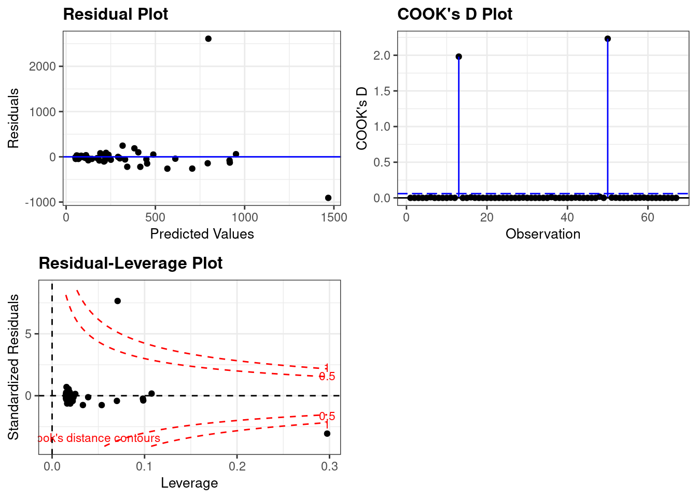
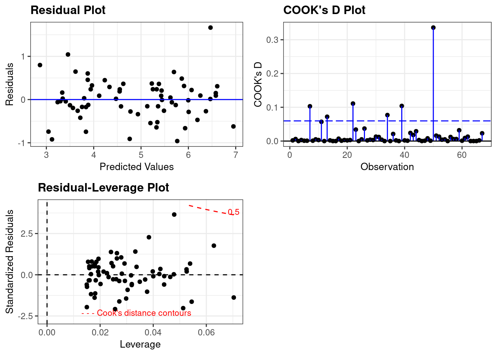

Code
library(smss)
data("house.selling.price.2")Tory Bartelloni
December 11, 2022
For the house.selling.price.2 data the tables below show a correlation matrix and a model fit using four predictors of selling price.
For backward elimination, which variable would be deleted first? Why?
Answer: Beds would be the first variable eliminated due to it having the largest p-value.
For forward selection, which variable would be added first? Why?
Answer: The first variable to be added would be size due to it having the smallest p-value.
Why do you think that BEDS has such a large P-value in the multiple regression model, even though it has a substantial correlation with PRICE?
Answer: Beds has a large p-value in the multiple regression model likely because the model is holding other values constant, which is showing that Beds has a lower explanatory effect when we remove the effects of other variables. There are other variables that have similar properties, like Size, which when controlled for reduces the effect of Beds.
Using software with these four predictors, find the model that would be selected using each criterion:
First I’ll build the models.
library(stargazer)
house_model <- lm(P ~ S + Be + Ba + New,
data=house.selling.price.2)
noSize_model <- lm(P ~ Be + Ba + New,
data=house.selling.price.2)
noBeds_model <- lm(P ~ S + Ba + New,
data=house.selling.price.2)
noBaths_model <- lm(P ~ S + Be + New,
data=house.selling.price.2)
noNew_model <- lm(P ~ S + Be + Ba,
data=house.selling.price.2)
sizeAndNew_model <- lm(P ~ S + New,
data=house.selling.price.2)
bathsAndNew_model <- lm(P ~ Ba + New,
data=house.selling.price.2)
models <- list(house_model, noSize_model, noBeds_model,
noBaths_model, noNew_model,
sizeAndNew_model, bathsAndNew_model)
#stargazer(house_model, type="text")
rsquared <- function(fit) summary(fit)$r.squared
adjrsquared <- function(fit) summary(fit)$adj.r.squared
PRESS <- function(fit) {
pr <- residuals(fit)/(1 - lm.influence(fit)$hat)
sum(pr^2)
}
model_fits <- data.frame(Model = c("house_model",
"noSize_model",
"noBeds_model",
"noBaths_model",
"noNew_model",
"sizeAndNew_model",
"bathsAndNew_model"),
RSquared = sapply(models, rsquared),
AdjRSquared = sapply(models, adjrsquared),
PRESS = sapply(models, PRESS),
AIC = sapply(models, AIC),
BIC = sapply(models, BIC))
knitr::kable(model_fits) | Model | RSquared | AdjRSquared | PRESS | AIC | BIC |
|---|---|---|---|---|---|
| house_model | 0.8688630 | 0.8629022 | 28390.22 | 790.6225 | 805.8181 |
| noSize_model | 0.6716595 | 0.6605919 | 67942.88 | 873.9787 | 886.6417 |
| noBeds_model | 0.8681361 | 0.8636912 | 27860.05 | 789.1366 | 801.7996 |
| noBaths_model | 0.8516484 | 0.8466478 | 30836.38 | 800.0934 | 812.7564 |
| noNew_model | 0.8330530 | 0.8274256 | 35097.34 | 811.0758 | 823.7388 |
| sizeAndNew_model | 0.8483699 | 0.8450003 | 31066.00 | 800.1262 | 810.2566 |
| bathsAndNew_model | 0.5624769 | 0.5527542 | 87677.82 | 898.6770 | 908.8074 |
The R-Squared model favors the full model. It does not account for the addtional variables being included, which inflates the R-Squared value so the fact that there are other, close R-Squared values indicates this may not be the best model.
All other metrics favor the No Beds Model, which includes all variables other than the Beds variable.
Based on the results above, where all of our metrics other than R-Squared favor a single model, I prefer that model (No Beds Model).
Tree volume estimation is a big deal, especially in the lumber industry. Use the trees data to build a basic model of tree volume prediction. In particular…
…fit a multiple regression model with the Volume as the outcome and Girth and Height as the explanatory variables
Call:
lm(formula = Volume ~ Girth + Height, data = trees)
Residuals:
Min 1Q Median 3Q Max
-6.4065 -2.6493 -0.2876 2.2003 8.4847
Coefficients:
Estimate Std. Error t value Pr(>|t|)
(Intercept) -57.9877 8.6382 -6.713 2.75e-07 ***
Girth 4.7082 0.2643 17.816 < 2e-16 ***
Height 0.3393 0.1302 2.607 0.0145 *
---
Signif. codes: 0 '***' 0.001 '**' 0.01 '*' 0.05 '.' 0.1 ' ' 1
Residual standard error: 3.882 on 28 degrees of freedom
Multiple R-squared: 0.948, Adjusted R-squared: 0.9442
F-statistic: 255 on 2 and 28 DF, p-value: < 2.2e-16Run regression diagnostic plots on the model. Based on the plots, do you think any of the regression assumptions is violated?
Residual and index plot indicate possible violations of the linearity assumption.
Location-Scale plot and Residual plot indicate possible issues with homoskedasticity, but maybe not definitive.
Residual-Leverage plot also indicates possible issues with representativeness shwoing an outlier with large leverage and Cook’s distance.
In the 2000 election for U.S. president, the counting of votes in Florida was controversial. In Palm Beach County in south Florida, for example, voters used a so-called butterfly ballot. Some believe that the layout of the ballot caused some voters to cast votes for Buchanan when their intended choice was Gore.
Run a simple linear regression model where the Buchanan vote is the outcome and the Bush vote is the explanatory variable. Produce the regression diagnostic plots. Is Palm Beach County an outlier based on the diagnostic plots? Why or why not?

Yes. In the three plots included here we see Palm Beach County clearly as an outlier. This is indicated by a large Cook’s Distance and the large residual compared to the other counties.
Take the log of both variables (Bush vote and Buchanan Vote) and repeat the analysis in (a). Does your findings change?

The log-transformed model eliminates the large residual and significantly reduces the Cook’s Distance. When laid over the Leverage plot we see more clearly that it’s outlier status would be much less of a concern.
---
title: "DACSS 603: Homework 5"
author: "Tory Bartelloni"
desription: "Homework 5"
date: "12/11/2022"
format:
html:
toc: true
code-fold: true
code-copy: true
code-tools: true
execute:
echo: true
warning: false
categories:
- hw5
- Tory Bartelloni
---
# Question 1
*For the house.selling.price.2 data the tables below show a correlation matrix and a model fit using four predictors of selling price.*
```{r}
library(smss)
data("house.selling.price.2")
```
## 1.A
*For backward elimination, which variable would be deleted first? Why?*
**Answer:** Beds would be the first variable eliminated due to it having the largest p-value.
## 1.B
*For forward selection, which variable would be added first? Why?*
**Answer:** The first variable to be added would be size due to it having the smallest p-value.
## 1.C
*Why do you think that BEDS has such a large P-value in the multiple regression model, even though it has a substantial correlation with PRICE?*
**Answer:** Beds has a large p-value in the multiple regression model likely because the model is holding other values constant, which is showing that Beds has a lower explanatory effect when we remove the effects of other variables. There are other variables that have similar properties, like Size, which when controlled for reduces the effect of Beds.
## 1.D
*Using software with these four predictors, find the model that would be selected using each criterion:*
First I'll build the models.
```{r}
library(stargazer)
house_model <- lm(P ~ S + Be + Ba + New,
data=house.selling.price.2)
noSize_model <- lm(P ~ Be + Ba + New,
data=house.selling.price.2)
noBeds_model <- lm(P ~ S + Ba + New,
data=house.selling.price.2)
noBaths_model <- lm(P ~ S + Be + New,
data=house.selling.price.2)
noNew_model <- lm(P ~ S + Be + Ba,
data=house.selling.price.2)
sizeAndNew_model <- lm(P ~ S + New,
data=house.selling.price.2)
bathsAndNew_model <- lm(P ~ Ba + New,
data=house.selling.price.2)
models <- list(house_model, noSize_model, noBeds_model,
noBaths_model, noNew_model,
sizeAndNew_model, bathsAndNew_model)
#stargazer(house_model, type="text")
rsquared <- function(fit) summary(fit)$r.squared
adjrsquared <- function(fit) summary(fit)$adj.r.squared
PRESS <- function(fit) {
pr <- residuals(fit)/(1 - lm.influence(fit)$hat)
sum(pr^2)
}
model_fits <- data.frame(Model = c("house_model",
"noSize_model",
"noBeds_model",
"noBaths_model",
"noNew_model",
"sizeAndNew_model",
"bathsAndNew_model"),
RSquared = sapply(models, rsquared),
AdjRSquared = sapply(models, adjrsquared),
PRESS = sapply(models, PRESS),
AIC = sapply(models, AIC),
BIC = sapply(models, BIC))
knitr::kable(model_fits)
```
The R-Squared model favors the full model. It does not account for the addtional variables being included, which inflates the R-Squared value so the fact that there are other, close R-Squared values indicates this may not be the best model.
All other metrics favor the No Beds Model, which includes all variables other than the Beds variable.
## 1.E
Based on the results above, where all of our metrics other than R-Squared favor a single model, I prefer that model (No Beds Model).
# Question 2
```{r}
data(trees)
```
*Tree volume estimation is a big deal, especially in the lumber industry. Use the trees data to build a basic model of tree volume prediction. In particular...*
## 2.A
*...fit a multiple regression model with the Volume as the outcome and Girth and Height as the explanatory variables*
```{r}
tree_model <- lm(Volume ~ Girth + Height, data=trees)
summary(tree_model)
```
## 2.B
*Run regression diagnostic plots on the model. Based on the plots, do you think any of the regression assumptions is violated?*
```{r}
library(ggResidpanel)
resid_panel(tree_model,
plots = "all",
smoother = TRUE)
```
Residual and index plot indicate possible violations of the linearity assumption.
Location-Scale plot and Residual plot indicate possible issues with homoskedasticity, but maybe not definitive.
Residual-Leverage plot also indicates possible issues with representativeness shwoing an outlier with large leverage and Cook's distance.
# Question 3
```{r}
library(alr4)
data("florida")
```
*In the 2000 election for U.S. president, the counting of votes in Florida was controversial. In Palm Beach County in south Florida, for example, voters used a so-called butterfly ballot. Some believe that the layout of the ballot caused some voters to cast votes for Buchanan when their intended choice was Gore.*
## 3.A
*Run a simple linear regression model where the Buchanan vote is the outcome and the Bush vote is the explanatory variable. Produce the regression diagnostic plots. Is Palm Beach County an outlier based on the diagnostic plots? Why or why not?*
```{r}
vote_model <- lm(Buchanan ~ Bush, data=florida)
resid_panel(vote_model, plots=c("resid","cookd","lev"))
```
Yes. In the three plots included here we see Palm Beach County clearly as an outlier. This is indicated by a large Cook's Distance and the large residual compared to the other counties.
## 3.B
*Take the log of both variables (Bush vote and Buchanan Vote) and repeat the analysis in (a). Does your findings change?*
```{r}
vote_model <- lm(log(Buchanan) ~ log(Bush), data=florida)
resid_panel(vote_model, plots=c("resid","cookd","lev"))
```
The log-transformed model eliminates the large residual and significantly reduces the Cook's Distance. When laid over the Leverage plot we see more clearly that it's outlier status would be much less of a concern.